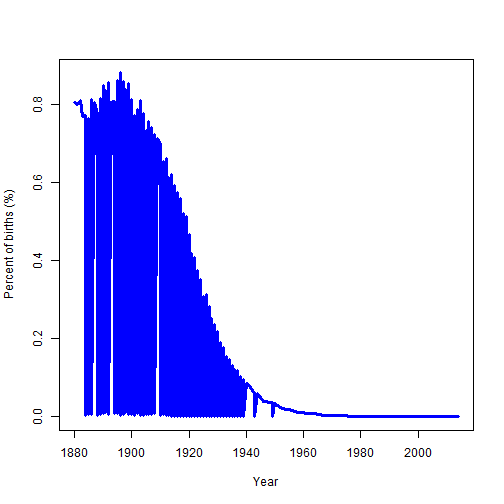

How common is your given name? Is your planned baby name too common?
M.K. McGregor
Developing Data Products
How common is your given name? Is your planned baby name too common?
We propose a new simple Shiny app to give this information.
We make use of the US Social Security Administration database of baby names from 1880-2014
head(babynames,3)
year sex name n prop
1 1880 F Mary 7065 0.07238359
2 1880 F Anna 2604 0.02667896
3 1880 F Emma 2003 0.02052149
tail(babynames,3)
year sex name n prop
1825431 2014 M Zymiere 5 2.463303e-06
1825432 2014 M Zyran 5 2.463303e-06
1825433 2014 M Zyrin 5 2.463303e-06
years <- babynames[which(babynames$name == "Gertrude"), "year"]
props <- 100*babynames[which(babynames$name == "Gertrude"), "prop"]
plot(years, props, xlab= "Year", ylab = "Percent of births (%)", type = "l", lwd=3, col="blue")
